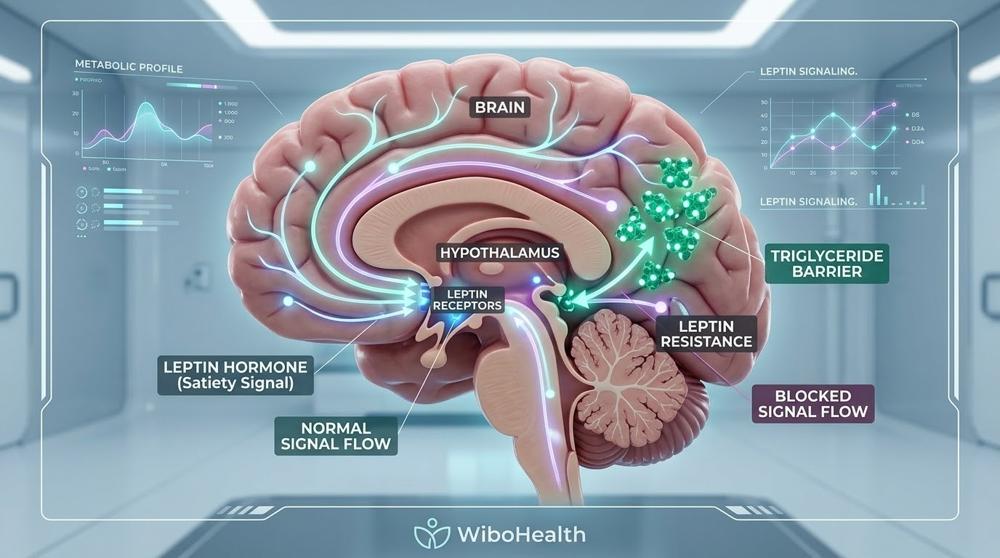

«خلصت صحن الغدا، شربت الشاي، وقعدت لترتاح.. عشر دقايق ما في غيرهن، ولا شعورياً بتلاقي حالك قمت فزيت وركضت عالبراد عم تنبش بين الرفوف! بيجي حدا بقلك: يا زلمة إنت ما عندك إرادة ومفجوع وبس بدك تفش خلقك بالأكل!»
استنوا شوي.. تعوا لأصدمكن صدمة سريرية تالتة ورابعة: الموضوع مالو علاقة بضعف الإرادة ولا بنكلة! 😁
لما حدا يتهمك بضعف الإرادة لأنك عم تجوع بسرعة، اعطوه كف بقفا إيدكن فوراً! القصة كلها فيزيولوجيا بحتة ولعبة هرمونات في غرف القيادة بالدماغ.
1. شو هوي هرمون اللبتين (Leptin)؟
سبحان الخالق العظيم، خلايانا الدهنية بالجسم بتفرز هرمون ذكي جداً اسمو اللبتين (Leptin). هاد الهرمون هو "سفير الشبع"؛ شغلته يطلع بالدم لعند غرفة العمليات بالدماغ (منطقة الهايبوثلاموس) ويقله: "يا ريس، عنا طاقة كافية ومخازن مليانة، سكر التموين وطفي إشارات الجوع وافتح بوابات الحرق!".
بالوضع الطبيعي، بتشبع وبتقوم عن السفرة وأنت مرتاح 5 إلى 6 ساعات بدون تفكير بالأكل.
2. الكارثة: ليش دماغك صار "أطرش"؟
المشكلة مو إنك ما عندك لبتين.. المشكلة إنو جسمك مليان لبتين لسابع سما، بس دماغك صار أطرش وما عم يسمعه! هي الحالة بالطب منسميها: مقاومة اللبتين (Leptin Resistance).

كيف تمنع الدهون الثلاثية والالتهابات هرمون اللبتين من الوصول لمستقبلات الشبع في الهايبوثلاموس
1. الدهون الثلاثية المرتفعة (Triglycerides): الناتجة عن سكر الفركتوز السائل والزيوت المهدرجة، بتعمل حاجز إسمنتي على بوابات الدماغ وبتمنع اللبتين يدخل!
2. التهابات الزيوت النباتية المكررة: زيوت القلي التجارية بتعمل التهاب مزمن بمستقبلات الدماغ فبتبطل تقرأ إشارات الشبع.
3. الصدمة الكبرى: دماغك مفكر حالك بمجاعة بالصحراء!
تخيل معي الكارثة: أنت وزنك زايد وعندك دهون تكفيك طاقة شهور.. بس لأنو دماغك أطرش ومو واصلته رسالة الشبع، بيفكر إنك عم تموت من الجوع بصحراء قاحلة!
كرد فعل دفاعي للبقاء، الدماغ بيفرز هرمون الجوع الشرس (الغريلين - Ghrelin) ليخليك تاكل الأخضر واليابس وتشتهي نشويات وسكريات حصراً، وبيهبط الحرق والأيض للصفر مشان يوفر طاقة وما تموت! أنت عم تاكل لأن خلايا دماغك عم تصرخ جوع حقيقي مو دلع!
4. حقيقة سكر الفواكه (الفركتوز).. توضيح سريري هام!
الفواكه الكاملة باعتدال (حبة تفاح، شوية توت) ممتازة لأن فيها ألياف بتبطئ الامتصاص. مصيبتنا مو بحبة الفاكهة.. مصيبتنا بـ عصير الفواكه (المصفى من الألياف) اللي هو عبارة عن 5 حبات معصورين بكاسة عم تشربهن بثواني، ومصيبتنا بـ سكر الفركتوز المصنّع وسيرب الذرة المخبأ بالبسكوت والحلويات والمعلبات؛ هاد هو اللي بيصنع دهون ثلاثية ويطّرش الدماغ فوراً!
5. علامات إنك واقع بفخ مقاومة اللبتين:
- بتخلص وجبتك، وبعد نص ساعة بتلاقي حالك عم تدور ع أي نقرشة أو حبة حلو.
- دهون عنيدة بأسفل البطن والخواصر ما عم تنزل مع أي دايت سعرات تقليدي.
- خمول شديد ورغبة بالتسطيح والنوم بعد الوجبات مباشرة.
- نوبات جوع ليلية مفاجئة (بتصير تفز عالبراد بنصاص الليالي).
6. الروشتة السريرية: كيف نرجع سمع الدماغ ونطفي الجوع الكاذب؟
- كبوا زيوت القلي بالزبالة: اعتمدوا حصراً الدهون الطبيعية (زيت زيتون بكر ممتاز، سمن بلدي حيواني، زبدة طبيعية) لإطفاء التهاب المستقبلات.
- اقفلوا حنفية العصائر والسكريات السائلة: كلوا الفاكهة كاملة بأليافها وابتعدوا تماماً عن عصائر العلب وسيرب الذرة.
- الصيام المتقطع مع رشة ملح بحري: خفض الأنسولين يزيل الدهون الثلاثية من مجرى الدم فيفتح بوابات الدماغ للبتين.
- النوم المبكر في ظلام تام: السهر وأضواء الشاشات يرفعان الكورتيزول ويشلان عمل اللبتين طوال اليوم التالي.
صلحوا دهونكن، صوموا، وناموا منيح.. بتلاقوا الشبع رجع لحاله ودماغكن طفى صفارات الإنذار.. سهلة عليكن ولا صعبة؟؟ 👍🏻
المعلومات الواردة في هذا الدليل مقدمة لأغراض التثقيف الصحي والغذائي فقط، ولا تغني عن الاستشارة الطبية المباشرة، التشخيص السريري، أو تعديل الجرعات الدوائية المقررة من قبل طبيبك المعالج.